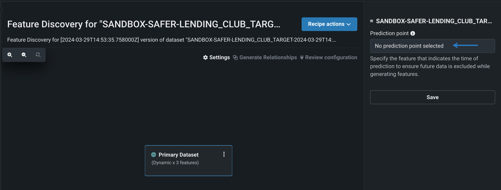

Feature Discovery is a powerful capability that enables enterprises to unlock the full potential of their AI deployments by discovering and generating new features across multiple datasets. Traditional data often lacks the required features for building high-performing predictive models, requiring time-consuming manual feature engineering. Feature Discovery automates this process, consolidating datasets and uncovering meaningful relationships to enhance model accuracy and efficiency. By eliminating manual feature engineering, it empowers organizations to scale AI initiatives with ease and consistency.
Contribution
Lead UX Designer
Target Users
Data Scientists, Data Engineers, and AI Specialists
Products
DataRobot's Workbench: Automated Feature Engineering for Smarter, Faster AI Model Development
Outcome
By automating feature engineering, Feature Discovery accelerates the AI development lifecycle, reducing the time and effort required to prepare datasets. Organizations achieve higher-quality predictive models by accessing more relevant and sophisticated features, ultimately leading to improved decision-making and operational efficiency.
The Feature Discovery tool streamlines feature generation by identifying and creating relevant features from primary and secondary datasets.
Replaces manual feature engineering by discovering and creating new features from primary and secondary datasets.
Applied Progressive Disclosure to present complex feature relationships in digestible layers, allowing users to understand the impact of each generated feature on model performance.

Define relationships between datasets with flexible configuration options within the Feature Discovery recipe.
Implemented Flexibility and Efficiency of Use through customizable relationship mapping and quick-access templates for common dataset configurations.

Scalable resource allocation enables admins to configure additional compute resources for large datasets.
Utilized Recognition Over Recall through visual resource utilization indicators and predictive resource recommendations based on dataset characteristics.
Seamlessly integrated within the Workbench for quick workflow initiation and streamlined processes.
Applied Consistency and Standards by maintaining familiar interaction patterns and visual language across the Workbench ecosystem.

Implemented an interactive graph visualization to help users understand complex feature relationships and dependencies, reducing cognitive load during feature selection.
Designed a step-by-step workflow that guides users through the feature discovery process, ensuring all necessary configurations are completed before execution.
Added real-time performance impact visualization to help users make informed decisions about feature selection and configuration.
Reduces time and effort required for data preparation and feature engineering.
Improves predictive accuracy through automated feature discovery and optimization.
Feature Discovery allows users to enrich their models by uncovering new features from multiple datasets. By defining relationships between a primary dataset and one or more secondary datasets, users can expand their feature space, leading to more accurate and insightful predictions. This capability enhances model performance, especially in complex data scenarios where interactions between datasets reveal hidden patterns.
To unlock the full potential of Feature Discovery, users add and configure secondary datasets, establishing meaningful relationships that drive feature generation. By doing so, DataRobot can automatically discover new features that significantly enhance model accuracy. In simpler cases where no secondary dataset is needed, users can bypass this step, optimizing their workflow without sacrificing model performance. However, leveraging secondary datasets often reveals deeper insights, adding strategic value to predictive experiments.


Adding a relationship between datasets tells DataRobot that the two datasets are connected.

By defining relationships between datasets, users enable DataRobot to recognize connections that drive feature discovery. This is essential for generating new features that would otherwise remain hidden, leading to richer data insights and improved model predictions. The process is made intuitive through automatic detection of compatible features, ensuring accuracy and efficiency in establishing joins.

Time-awareness empowers models to learn from temporal patterns, significantly enhancing prediction accuracy for time-series data. By anchoring forecasts to specific time points, the model better understands trends and seasonality. This capability is particularly valuable in industries where timing impacts outcomes, such as finance, retail, and supply chain management.
The intuitive design of the DAG (Directed Acyclic Graph) and on-screen controls streamlined the configuration process for secondary datasets. Users could visually map relationships between datasets, reducing the time required for setup and improving clarity during complex feature engineering tasks.
By providing interactive, on-screen controls directly within the UI, users could configure secondary datasets without relying on external tools or complex scripting. This accessibility lowered the learning curve, enabling both experienced data scientists and less technical users to perform feature discovery with ease.
The DAG's visual representation of dataset relationships allowed users to quickly identify and define connections between primary and secondary datasets. This reduced manual errors, enhanced accuracy, and significantly accelerated the process of generating meaningful features for predictive modeling.
The UI's streamlined controls supported efficient handling of large datasets, allowing users to allocate resources dynamically and scale feature discovery operations. This ensured that enterprises could handle increasingly complex data scenarios without compromising performance.
The combination of an efficient DAG structure and user-friendly UI controls enabled the creation of richer, more relevant feature sets. This directly contributed to improved model accuracy and reliability, driving better outcomes for AI projects and enhancing the overall value of DataRobot's platform.
Discover other innovative solutions in data management and user experience design.
View All Projects Data Prep for AI-Driven Enterprises
Data Prep for AI-Driven Enterprises Mobile Data Observability
Mobile Data Observability Copilot for Augmented HR
Copilot for Augmented HR Cross-platform Recommendations
Cross-platform Recommendations Policy Workflow Optimization
Policy Workflow Optimization Copilot Observability Experience
Copilot Observability Experience